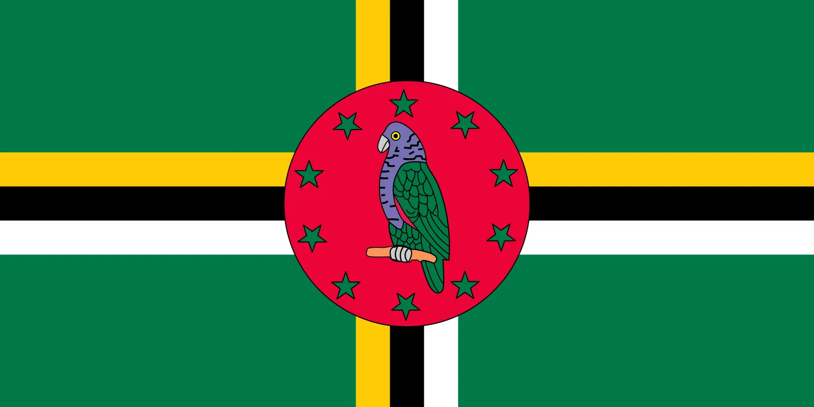
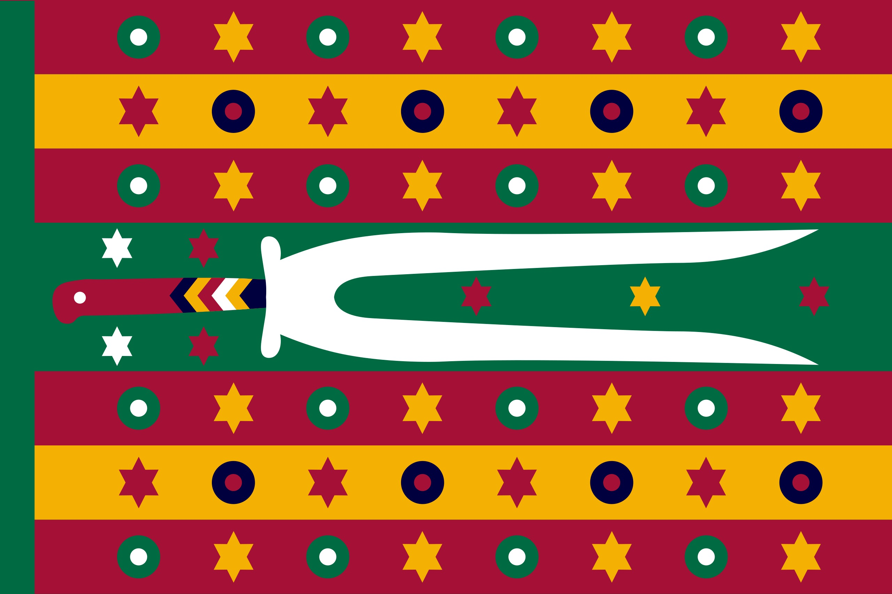
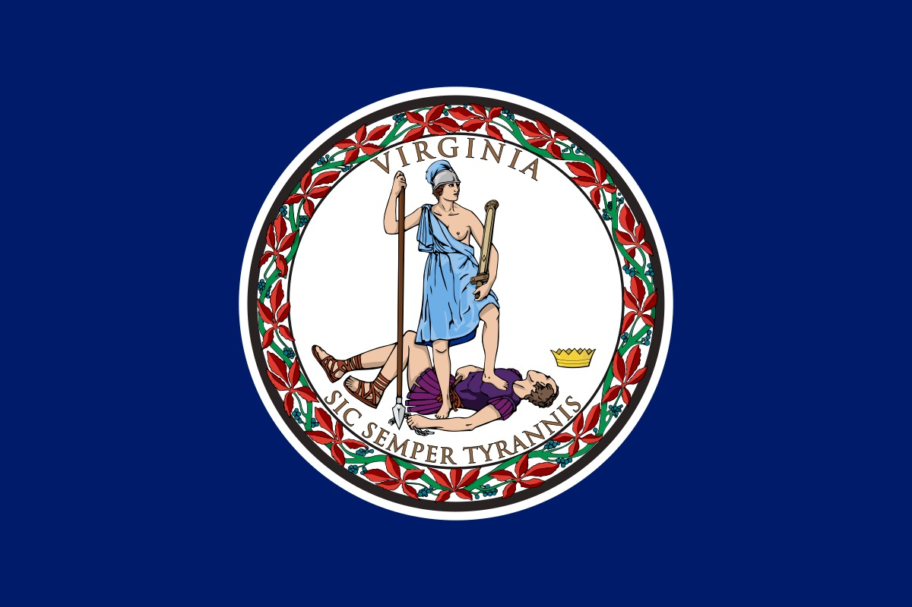

FLAG DESIGN
A person who studies flags is called a vexillologist, and a person who designs flags is a vexillographer. Vexillologists and vexillographers have common standards and “rules” as to what makes a flag design appealing or not.
Here are the North American Vexillological Association’s five principles to a good flag design:
Keep It Simple
The flag should be so simple that a child can draw it from memory.
Use Meaningful Symbolism
The flag's images, colors, or patterns should relate to what it symbolizes.
Use 2 or 3 Basic Colors
Limit the number of colors on the flag to three which contrast well and come from the standard color set.
No Lettering or Seals
Never use writing of any kind or an organization's seal.
Be Distinctive or Be Related
Avoid duplicating other flags, but use similarities to show connections.
According to these rules, these are some "good" flags:
Dominican Republic
Bangladesh
Alaska
And these are some "bad" flags:

Dominica

Bey of Tunisia

Virginia
Of course, these rules can be broken and have many exceptions.
The many colors on South Africa's flag each have deep symbolic and historical meanings.

The "CALIFORNIA REPUBLIC" text on California's flag makes this design memorable and iconic.